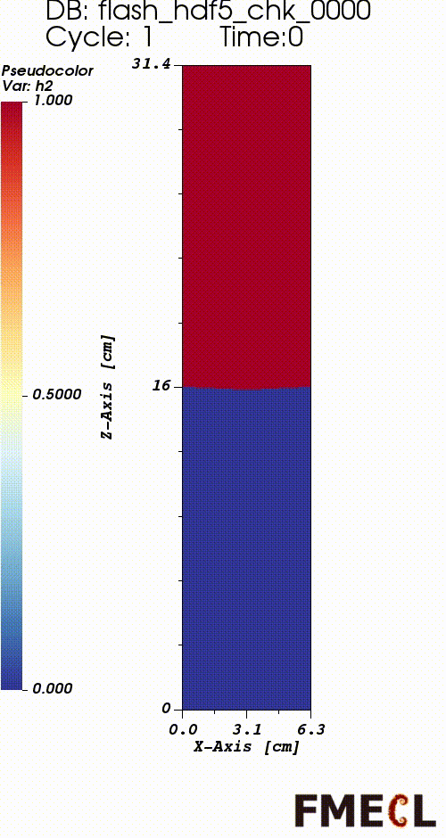
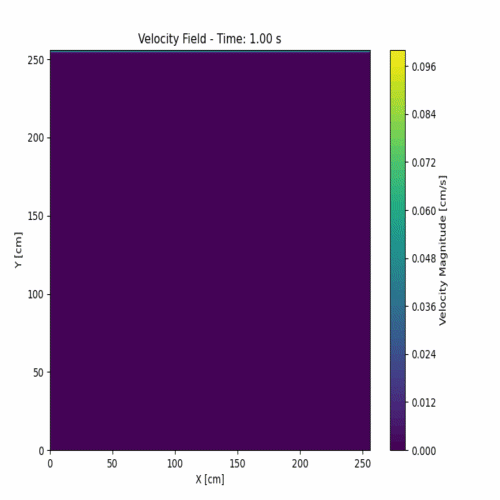
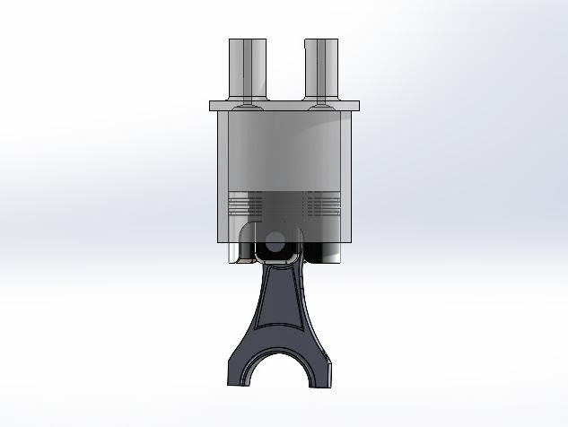

Simulation Visualizations
Below are visualizations from my simulations of fluid dynamics and instability phenomena. Each simulation represents a different aspect of my research.

Rayleigh-Taylor Instability (2024)
This simulation showcases the Rayleigh-Taylor instability, a phenomenon that occurs when a denser fluid is accelerated into a lighter fluid, causing the interface to become unstable. In this case, the Atwood number is 0.1, and the particle diameter is 0.05 μm. The result helps visualize multiphase mixing under weak instability.

Particle-in-Cell with LBM Interface (2021)
This simulation visualizes a Particle-in-Cell (PIC) method using the Lattice Boltzmann Method (LBM), where particles are tracked within a compressible velocity field. The model highlights how particle motion evolves within fluid domains.

PIC Coupled with Compressible Euler (2022)
This simulation shows a Particle-in-Cell (PIC) method coupled with the compressible Euler equations in the deal.II C++ finite element library. It advances massless tracer tracking with explicit integration and momentum feedback.
Reference: deal.II step-68 Tutorial
Reference: deal.II step-68 Tutorial

Engine Cylinder Design and Analysis (2015)
A piston-cylinder assembly of the Mercedes-Benz OM355 diesel engine was modeled in SOLIDWORKS to analyze shear stress, deformation, and heat transfer due to combustion. This CAD model was used to evaluate mechanical integrity under thermal and pressure loads.